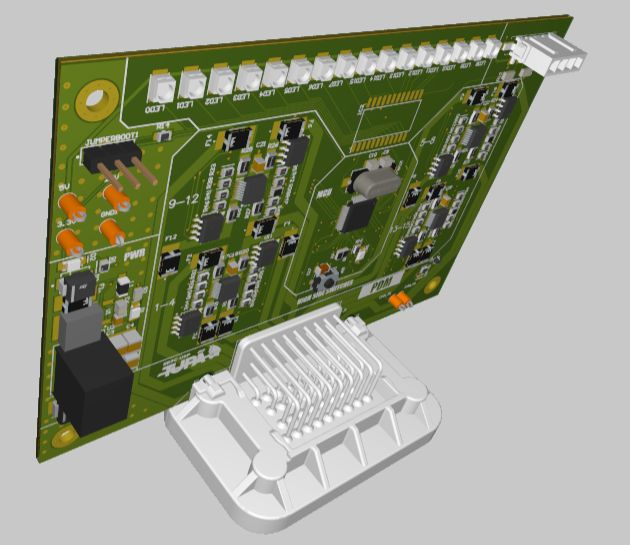
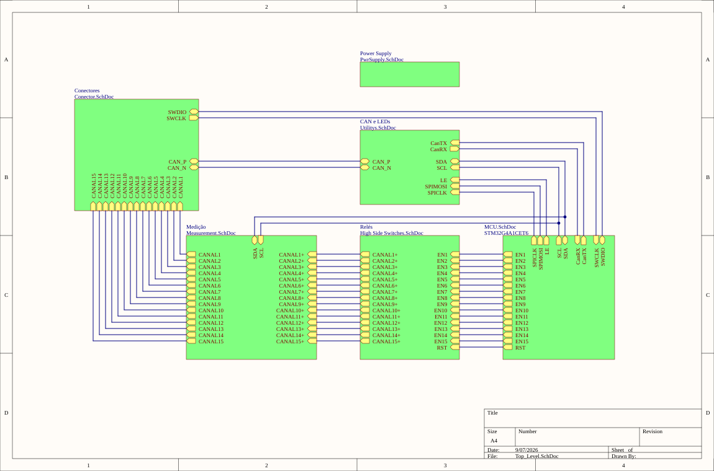

T11 · EESC-USP Tupã
Power Distribution Module
Electronic power distribution for the Formula SAE vehicle.
Explore the PCB
3D · Copper layers · SchematicsRotate and zoom the complete board, including copper and silkscreen. Switch to PCB to inspect the layout. Open SCH to browse all seven circuit sheets.
Altium 365 viewer. The board image below remains available while the interactive design loads.

Board details
- PCB
- 4 copper layers · 1.5477 mm stackup
- Controller
- STM32G4A1CET6
- Switching
- VNQ9025AJTR high-side switches
- Build status
- Manufactured, tested and installed
PDM system overview
General topologyHow the main functional blocks connect.

PDM schematics
7 sheetsOpen a sheet below or use SCH in the interactive viewer.